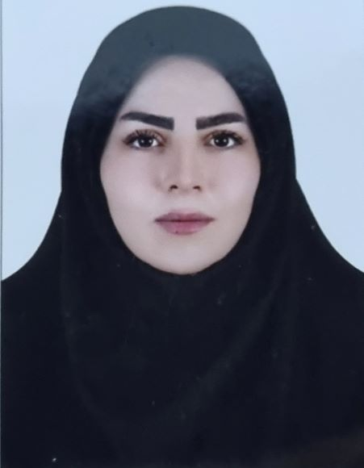

Dr. Parvaneh Radandish
Assistant Professor
A scholarly and professional network connecting students, graduates, faculty members, researchers and translators in Russian language, literature, culture and Russian studies. Membership is approved after reviewing the applicant’s academic or professional connection to the Association.

RLS MEMBERSHIP
Use the dedicated member portal to apply for membership, sign in and manage your profile.
ABOUT RLS · The Association
Russian Language Studies Association (RLS) با هدف گسترش و ارتقای مطالعات زبان روسی و تقویت ارتباط میان فعالان این حوزه شکل گرفته است. این انجمن بستری علمی و تخصصی برای تعامل و تبادل دانش و تجربه میان استادان، پژوهشگران، Studentیان، دانشآموختگان، مترجمان و علاقهمندان به زبان، ادبیات و فرهنگ روسیه فراهم میآورد.
The Association’s activities cover Russian language teaching and learning, linguistics, literature, translation and cultural studies. RLS seeks to support the development of knowledge and a dynamic scholarly community by highlighting research and academic achievements, creating opportunities for specialist collaboration and facilitating communication among members.
RLS envisions a dynamic and influential network in Russian language studies. By supporting education and research, developing translation activities and strengthening academic and cultural interaction, the Association aims to advance Russian studies and foster connections between the academic community in Iran and the Russian-speaking world.
RLS: a platform for dialogue, research, education and collaboration in Russian language studies.Membership is intended for people whose academic, research, teaching, professional or cultural background is related to the Russian language, Russian literature, or the cultural and social studies of the Russian-speaking world.
Applications are assessed on the basis of academic and professional information, areas of expertise and the relevance of the applicant’s activities to the Association’s aims. Submitting an application does not itself constitute acceptance. Names and profiles appear in the public directory only after review and approval.
Applicants must provide accurate information consistent with their actual records. Supporting documents or further information may be requested during the review process.